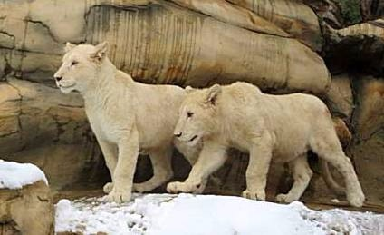
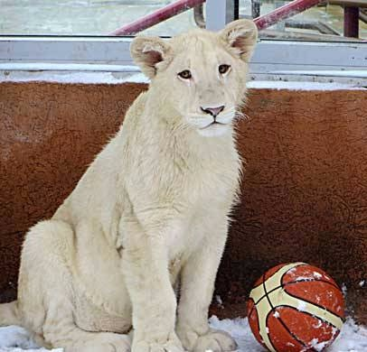
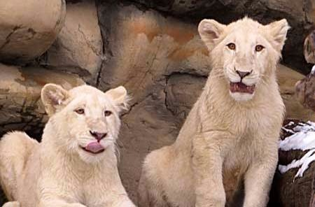
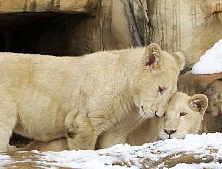

В Минском зоопарке в ноябре 2016 появились новоселы – чудесные белые львята - пара пушистых белых котят, родом из солнечной Армении. Их поселили в наружном вольере экзотариума, рядом со стеллой, расположенной у входа.
Львята с удовольствием осваивают новый вольер – они выходят из теплого помещения , залезают на «искусственные скалы», радуются свежему снежку.


Львята совсем юные – родились они в мае месяце, и неискушенный глаз не отличит самца от самки. Со временем у Ника, такую кличку получил маленький царь зверей, вырастет роскошная грива. Сегодня же Ника не отличить от его подруги Ники – животные одинакового размера, веселые, озорные любопытные, по-детски непосредственные.


В зоопарке обитают и ставшие привычными для посетителей рыжие африканские львы. Во главе почтенного семейства – взрослый лев по кличке Алекс, его подруги имеют клички Киса и Злата.
Лев (белая вариация)
Panthera leo var. аlba
Белый лев не является отдельным подвидом. Это очень редкий вариант окраски африканского льва, варьирующий от чисто-белого до кремового. Глаза этих животных бывают светло-голубыми или янтарными, как у обычных львов. Белые львы не альбиносы, как принято считать. Убыток пигментации в цвете шерсти и цвете кожи, объясняется отсутствием соответствующего гена. Белые львята, рождаются вместе с обычными. Из-за такого «нестандартного» цвета большинство таких львов в дикий природе погибают, так как для них практически невозможно незамеченными подкрасться к добыче. Молва о белых львах, населяющих Южную Африку, шла еще четыреста лет назад, но только в 1975 году были получены достоверные свидетельства, подтверждающие существование этих таинственных кошек.
Легенда гласит что когда-то давно, злые духи наслали страшное проклятие на жителей земли, из-за мучительных болезней гибли многие. Люди стали молить богов о помощи, небеса сжалились над страдающими и отправили на землю своего посланника — могучего Белого Льва, который своей мудростью научил людей бороться с болезнями и пообещал защищать их в трудную минуту. Поверье гласит, что пока существуют на земле белые львы, в сердцах людей нет места страданиям и отчаянию.
В настоящее время на планете существует около трехсот особей, этого, потерянного когда-то для человечества, вида. Сейчас белый лев не является животным, обитающим на просторах африканских прерий, легендарных львов оберегают и создают им комфортные условия для размножения в заповедниках всего мира.